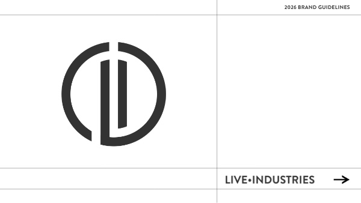

Flat logo behavior
Logo rules protect the mark from distortion, perspective, skew, adaptive scaling, and effects.
Brand Identity Standards
Live.Industries needed an identity that could hold up under pressure: technical enough for production crews, clear enough for clients, and restrained enough to scale from credentials to stage-side systems.

Challenge
The visual system had to feel engineered, not ornamental. The work behind live events is logistical, precise, and deeply human, so the identity needed to signal control without becoming cold.
The answer is a compact system built around flat marks, strict geometry, neutral structure, and selective accents. Every rule is designed to keep the brand legible when the environment gets busy.
System
Logo rules protect the mark from distortion, perspective, skew, adaptive scaling, and effects.
Brandon Grotesque provides authority and structure while Montserrat keeps long-form information clear.
Graphite, Cool Gray, and Alabaster Gray do the heavy lifting. Ochre and red are reserved for emphasis.
The guide translates brand decisions into practical rules for production decks, credentials, mockups, and client-facing material.
Guidelines
Palette
The color system stays intentionally quiet. Graphite carries the identity, gray supports structure, and the accent colors appear only when hierarchy or urgency requires them.
Voice
The values page gives the brand a plainspoken center: built to scale, guided by people, and grounded in the details that make complex work feel calm.
Outcome
The final system gives Live.Industries a practical visual language for decks, client communication, credentials, mockups, and production materials. It is restrained, scalable, and built for clarity under pressure.